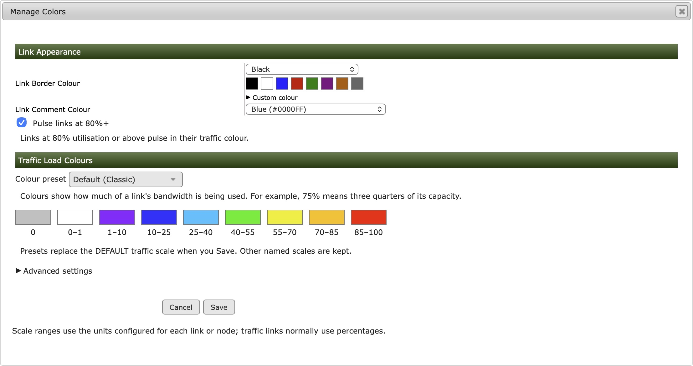
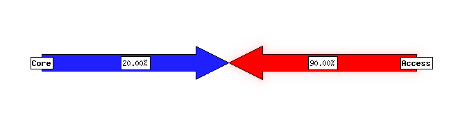

Appearance and image libraries
Appearance settings belong to the current map unless described as a shared library or Cacti-wide preference. Changing one map's colours does not recolour every map. Select a screenshot to open it at full size.
Map Properties and backgrounds
Set the title, canvas width/height and background in Map Properties. A new blank map starts at 1400 × 750 pixels; change these dimensions to suit your layout. Node positions, notes and via points use coordinates within this canvas.
Map Properties also holds the default IN/OUT link bandwidth for this map. New links inherit that capacity. Default link width is in Map Style. The initial capacity is 1000M in both directions; 1G means the same thing with the default KILO 1000. An existing link with its own capacity keeps that value when you change the defaults.
| Background sizing | Effect |
|---|---|
| Use image size | Uses the background image dimensions, retaining legacy image-sized map behaviour. |
| Fit to map | Scales the image proportionally to fit inside the configured canvas. Unused space keeps the map background colour. |
| Stretch to map | Fills the configured canvas in both directions; can distort the image. |
Upload a background through Manage Images, then select it in Map Properties to apply it to the map. Review object placement after changing canvas size or background mode.

Map Style, fonts and comments
Link Appearance Defaults includes link width, Comment Style and Traffic Label Positions. Edge places comments beside the link; Centre places them over the arrow. Traffic label positions move the IN/OUT utilisation boxes along the route: 0% is the first node and 100% is the second. These positions are separate from comment positions.
To change one link, open Link Properties. Comment Style is beside the comment controls; Traffic Label Positions is under Advanced settings. Choose Use map default to restore inheritance. Links using a named configuration template inherit that template's settings.
Map Style controls the current map's defaults for nodes, links, labels and legends. Link Appearance Defaults includes Follow link curve, enabled by default. This affects comment text, not the numeric traffic labels. It requires a TrueType font; choose a bundled font and size in Map Style. Very tight bends, unsafe geometry or text that will not fit use straight text. Turning the option off deliberately uses straight comments.
Via Style still determines the link route. A curved route without a bend near the comment may produce almost straight text. Shorten long comments, move their percentage position or adjust the via points if a fallback is unsuitable. Fonts must be readable by both editor and poller accounts; bundled fonts avoid machine-specific paths.
Defaults affect objects inheriting those values. Explicit per-object overrides and included templates may retain their own settings. Do not assume changing a default forcibly overwrites every custom object.

Manage Colors and high-load pulsing
Manage Colors edits the map background, link outline, link-comment colours and traffic scales, with presets and custom ranges. It applies to this map. An included shared scale may be locked in the form; edit its source configuration deliberately if you want to affect every map that includes it.
To change the traffic colours, open Manage Colors and choose a Colour preset under Traffic Load Colours. For example, Green / Amber / Red gives a familiar progression as utilisation rises. Review the preview, then Save. The preset replaces the DEFAULT traffic scale for this map; other named scales are kept.
For your own ranges, open Advanced settings. Each row has a scale name, From/To limits, a colour, an optional Gradient End colour and an optional legend label. Traffic scales normally use percentages. A colour change is a visual cue, not a Cacti threshold alarm. Check the link capacity so those percentages mean what you expect.
Optional high-load pulsing is a viewer effect for each link direction at 80% utilisation or above. The saved map's values drive it; it does not sample the network live or change RRD data. Browser reduced-motion settings and background-tab behaviour can suppress animation. Static image exports do not animate.

Enable or disable link pulsing
- Open the map in the editor and choose Manage Colors.
- Under Link Appearance, set Pulse links at 80%+ and save.
- Return to the normal map viewer after the next managed render. The editor canvas is a design preview; it does not show this animated viewer effect.
In raw configuration, put the setting in the global section, before the first NODE or LINK:
# Enable the high-load viewer effect (the default).
SET traffic_pulse 1Use SET traffic_pulse 0 to disable it for this map. If a management Map
Setting defines the same hint, that override takes precedence: see settings inheritance.
The 80% threshold is evaluated separately for each direction. Colour presets change the traffic colours; they do not change this threshold. Set BANDWIDTH correctly: 900M on a 1G direction is 90%, while 900M on a 10G direction is only 9%.

A screenshot or exported PNG cannot capture the pulsing motion. No animation usually means pulsing is disabled, the last rendered utilisation is below 80%, or reduced-motion/background-tab handling has paused it. Check the viewer's output timestamp as well as the link capacity.
Upload and manage images
Open Manage Images and choose the node icon or background library. Upload PNG, JPEG or GIF files up to 5 MB and four million pixels. Server upload limits can be lower. SVG is not accepted by the upload form. Transparent PNG works well for node icons. Choose a file, then press Upload Node Icon or Upload Background. Uploads save immediately; there is no later Save step in this dialog. GIF uploads keep only the first frame.
The libraries are stored in images/objects/ and
images/backgrounds/. Uploads receive safe unique filenames and are
decoded/re-encoded before storage. The PHP web account needs write access to the relevant
library. The poller also needs read access. Avoid granting write access to the entire
plugin.
Select an uploaded icon in Node Properties, or select a background in Map Properties. The icon picker is searchable.
The manager lists configuration references and prevents deletion of referenced images, including checked INCLUDE references. Remove assignments and save before deleting an unused image. A failed reference check blocks deletion; do not bypass it by deleting files directly. Upload/delete operations affect shared files and are outside map Undo/Redo.
Labels, notes and previews
Node display-name positioning places the label above, centred over or below its icon. Map notes are independent text objects. Gallery thumbnails are generated at higher resolution than their display size, while cards remain compact. Hover graph sharpening is separate from map-image rendering and does not require enlarging every Cacti graph template.
See node controls, notes and hover graphs for their workflows.